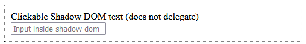
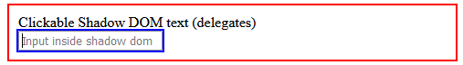

<template>: The Content Template element
Baseline Widely available
This feature is well established and works across many devices and browser versions. It’s been available across browsers since November 2015.
The <template> HTML element serves as a mechanism for holding HTML fragments, which can either be used later via JavaScript or generated immediately into shadow DOM.
Attributes
This element includes the global attributes.
shadowrootmode-
Creates a shadow root for the parent element. It is a declarative version of the
Element.attachShadow()method and accepts the same enumerated values.open-
Exposes the internal shadow root DOM for JavaScript (recommended for most use cases).
closed-
Hides the internal shadow root DOM from JavaScript.
Note: The HTML parser creates a
ShadowRootobject in the DOM for the first<template>in a node with this attribute set to an allowed value. If the attribute is not set, or not set to an allowed value — or if aShadowRoothas already been declaratively created in the same parent — then anHTMLTemplateElementis constructed. AHTMLTemplateElementcannot subsequently be changed into a shadow root after parsing, for example, by settingHTMLTemplateElement.shadowRootMode.Note: You may find the non-standard
shadowrootattribute in older tutorials and examples that used to be supported in Chrome 90-110. This attribute has since been removed and replaced by the standardshadowrootmodeattribute. shadowrootclonable-
Sets the value of the
clonableproperty of aShadowRootcreated using this element totrue. If set, a clone of the shadow host (the parent element of this<template>) created withNode.cloneNode()orDocument.importNode()will include a shadow root in the copy. shadowrootdelegatesfocus-
Sets the value of the
delegatesFocusproperty of aShadowRootcreated using this element totrue. If this is set and a non-focusable element in the shadow tree is selected, then focus is delegated to the first focusable element in the tree. The value defaults tofalse. shadowrootserializableExperimental-
Sets the value of the
serializableproperty of aShadowRootcreated using this element totrue. If set, the shadow root may be serialized by calling theElement.getHTML()orShadowRoot.getHTML()methods with theoptions.serializableShadowRootsparameter settrue. The value defaults tofalse.
Usage notes
There are two main ways to use the <template> element.
Template document fragment
By default, the element's content is not rendered.
The corresponding HTMLTemplateElement interface includes a standard content property (without an equivalent content/markup attribute). This content property is read-only and holds a DocumentFragment that contains the DOM subtree represented by the template.
This fragment can be cloned via the cloneNode method and inserted into the DOM.
Be careful when using the content property because the returned DocumentFragment can exhibit unexpected behavior.
For more details, see the Avoiding DocumentFragment pitfalls section below.
Declarative Shadow DOM
If the <template> element contains the shadowrootmode attribute with a value of either open or closed, the HTML parser will immediately generate a shadow DOM. The element is replaced in the DOM by its content wrapped in a ShadowRoot, which is attached to the parent element.
This is the declarative equivalent of calling Element.attachShadow() to attach a shadow root to an element.
If the element has any other value for shadowrootmode, or does not have the shadowrootmode attribute, the parser generates a HTMLTemplateElement.
Similarly, if there are multiple declarative shadow roots, only the first one is replaced by a ShadowRoot — subsequent instances are parsed as HTMLTemplateElement objects.
Examples
Generating table rows
First we start with the HTML portion of the example.
<table id="producttable">
<thead>
<tr>
<td>UPC_Code</td>
<td>Product_Name</td>
</tr>
</thead>
<tbody>
<!-- existing data could optionally be included here -->
</tbody>
</table>
<template id="productrow">
<tr>
<td class="record"></td>
<td></td>
</tr>
</template>
First, we have a table into which we will later insert content using JavaScript code. Then comes the template, which describes the structure of an HTML fragment representing a single table row.
Now that the table has been created and the template defined, we use JavaScript to insert rows into the table, with each row being constructed using the template as its basis.
// Test to see if the browser supports the HTML template element by checking
// for the presence of the template element's content attribute.
if ("content" in document.createElement("template")) {
// Instantiate the table with the existing HTML tbody
// and the row with the template
const tbody = document.querySelector("tbody");
const template = document.querySelector("#productrow");
// Clone the new row and insert it into the table
const clone = template.content.cloneNode(true);
let td = clone.querySelectorAll("td");
td[0].textContent = "1235646565";
td[1].textContent = "Stuff";
tbody.appendChild(clone);
// Clone the new row and insert it into the table
const clone2 = template.content.cloneNode(true);
td = clone2.querySelectorAll("td");
td[0].textContent = "0384928528";
td[1].textContent = "Acme Kidney Beans 2";
tbody.appendChild(clone2);
} else {
// Find another way to add the rows to the table because
// the HTML template element is not supported.
}
The result is the original HTML table, with two new rows appended to it via JavaScript:
Implementing a declarative shadow DOM
In this example, a hidden support warning is included at the beginning of the markup. This warning is later set to be displayed via JavaScript if the browser doesn't support the shadowrootmode attribute. Next, there are two <article> elements, each containing nested <style> elements with different behaviors. The first <style> element is global to the whole document. The second one is scoped to the shadow root generated in place of the <template> element because of the presence of the shadowrootmode attribute.
<p hidden>
⛔ Your browser doesn't support <code>shadowrootmode</code> attribute yet.
</p>
<article>
<style>
p {
padding: 8px;
background-color: wheat;
}
</style>
<p>I'm in the DOM.</p>
</article>
<article>
<template shadowrootmode="open">
<style>
p {
padding: 8px;
background-color: plum;
}
</style>
<p>I'm in the shadow DOM.</p>
</template>
</article>
const isShadowRootModeSupported =
HTMLTemplateElement.prototype.hasOwnProperty("shadowRootMode");
document
.querySelector("p[hidden]")
.toggleAttribute("hidden", isShadowRootModeSupported);
Declarative Shadow DOM with delegated focus
This example demonstrates how shadowrootdelegatesfocus is applied to a shadow root that is created declaratively, and the effect this has on focus.
The code first declares a shadow root inside a <div> element, using the <template> element with the shadowrootmode attribute.
This displays both a non-focusable <div> containing text and a focusable <input> element.
It also uses CSS to style elements with :focus to blue, and to set the normal styling of the host element.
<div>
<template shadowrootmode="open">
<style>
:host {
display: block;
border: 1px dotted black;
padding: 10px;
margin: 10px;
}
:focus {
outline: 2px solid blue;
}
</style>
<div>Clickable Shadow DOM text</div>
<input type="text" placeholder="Input inside Shadow DOM" />
</template>
</div>
The second code block is identical except that it sets the shadowrootdelegatesfocus attribute, which delegates focus to the first focusable element in the tree if a non-focusable element in the tree is selected.
<div>
<template shadowrootmode="open" shadowrootdelegatesfocus>
<style>
:host {
display: block;
border: 1px dotted black;
padding: 10px;
margin: 10px;
}
:focus {
outline: 2px solid blue;
}
</style>
<div>Clickable Shadow DOM text</div>
<input type="text" placeholder="Input inside Shadow DOM" />
</template>
</div>
Last of all we use the following CSS to apply a green-yellow border to the parent <div> element when it has focus.
div:focus {
border: 2px solid red;
}
The results are shown below.
When the HTML is first rendered, the elements have no styling, as shown in the first image.
For the shadow root that does not have shadowrootdelegatesfocus set you can click anywhere except the <input> and the focus does not change (if you select the <input> element it will look like the second image).

For the shadow root with shadowrootdelegatesfocus set, clicking on the text (which is non-focusable) selects the <input> element, as this is the first focusable element in the tree.
This also focuses the parent element as shown below.

Avoiding DocumentFragment pitfalls
When a DocumentFragment value is passed, Node.appendChild and similar methods move only the child nodes of that value into the target node. Therefore, it is usually preferable to attach event handlers to the children of a DocumentFragment, rather than to the DocumentFragment itself.
Consider the following HTML and JavaScript:
HTML
<div id="container"></div>
<template id="template">
<div>Click me</div>
</template>
JavaScript
const container = document.getElementById("container");
const template = document.getElementById("template");
function clickHandler(event) {
event.target.append(" — Clicked this div");
}
const firstClone = template.content.cloneNode(true);
firstClone.addEventListener("click", clickHandler);
container.appendChild(firstClone);
const secondClone = template.content.cloneNode(true);
secondClone.children[0].addEventListener("click", clickHandler);
container.appendChild(secondClone);
Result
Since firstClone is a DocumentFragment, only its children are added to container when appendChild is called; the event handlers of firstClone are not copied. In contrast, because an event handler is added to the first child node of secondClone, the event handler is copied when appendChild is called, and clicking on it works as one would expect.
Technical summary
| Content categories | Metadata content, flow content, phrasing content, script-supporting element |
|---|---|
| Permitted content | No restrictions |
| Tag omission | None, both the starting and ending tag are mandatory. |
| Permitted parents |
Any element that accepts
metadata content,
phrasing content, or
script-supporting elements. Also allowed as a child of a <colgroup>
element that does not have a
span attribute.
|
| Implicit ARIA role | No corresponding role |
| Permitted ARIA roles | No role permitted |
| DOM interface | HTMLTemplateElement |
Specifications
| Specification |
|---|
| HTML Standard # the-template-element |
Browser compatibility
BCD tables only load in the browser
See also
partandexportpartsHTML attributes<slot>HTML element:has-slotted,:host,:host(), and:host-context()CSS pseudo-classes::partand::slottedCSS pseudo-elementsShadowRootinterface- Using templates and slots
- CSS scoping module
- Declarative Shadow DOM (with html) in Using Shadow DOM
- Declarative shadow DOM on web.dev (2023)